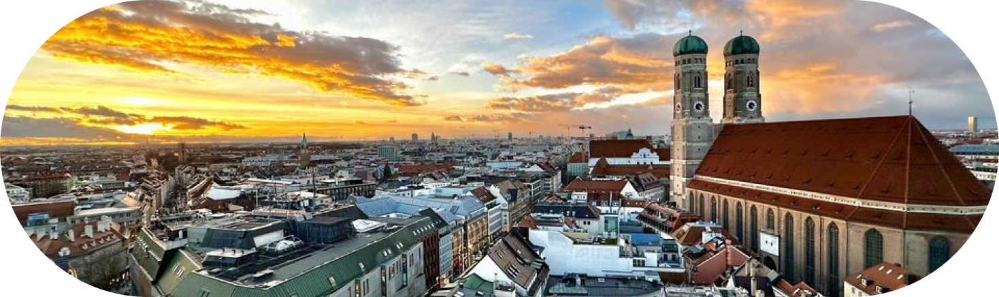
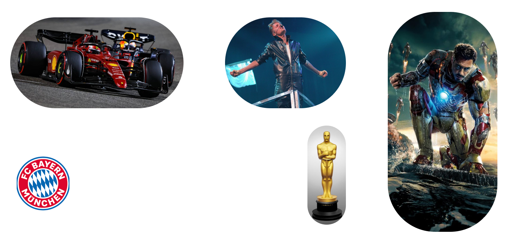

ABOUT ME

About my hobbies:
Violin:
I started practicing the violin at age 7 and have since then taken part in various competitions (such as “Jugend Musiziert”)
and been to masterclasses in various countries (Italy, Germany, Austria,...).
Soccer:
I enjoy playing all different kinds of sports, but mainly team sports and one of my favorites is soccer. Since I can remember
I have always played it with my dad and at every school break I was eager to be back on the field. Every now and then I was part
of teams until I had to stop due to longer school hours. My favorite soccer team is FC Bayern München.
Film:
I love to watch movies and read their scripts as well as writing some on my own. Movies were one of the driving forces when I decided
to learn English on my own during the lockdown (at that point we had only learned the very basics at school), because I wanted to finally
be able to watch them in their original language and understand all of the interviews, press conference talks, behind the scenes material, b-roll and so on.
Formula 1:
I’ve always had a certain interest in motorsport, but it was only after getting my first Carrera racetrack (a toy racetrack with small
cars that can be driven on the track) that my interest really started to grow and I tried to learn all the abbreviations and rules as
fast as possible to understand the races and look into the engineering, drivers and teams of the sport. My favorite driver is Charles Leclerc
who drives for Ferrari with the number 16 shortly followed by Sergio Perez (Red Bull number 11).
Marvel:
Although I love all movie genres and try to watch every upcoming movie as well as the classics I have to admit that my favorite franchise is Marvel,
not only because I think that they’re movies are incredibly cool and well structured, but because (with the Star Wars Saga) they were the ones to
first introduce me to cinema. My favorite Marvel character (and with that possibly favorite of all) is Tony Stark aka Iron Man.
His arc was wonderfully build over more than 11 years and he had the best lines among all.
Justin Bieber:
I love listening to music, may it be classical or contemporary styles such as pop. However the one artist I listen most to is Justin Bieber.
No matter if it’s one of his first songs or newer ones I always love the melody, rhythm and lyrics. One of the best things about him
is that he is one of the most versatile artists I know, which might be the reason I listen to him all the time, because he will always
have at least one song that will match my current mood perfectly.
About my educational life:
From 2014-2018 I went to the Wilhelmschule in Munich.
From 2018-2022 I went to the Maximiliansgymnasium in Munich.
From 2022-now I go to the Domgymnasium in Freising.
Over the course of this decade I have learned ancient Greek, Latin, English and German as well as all the basics in math, physics, chemistry, biology,
history and geography. On top of that I have courses in computer science, economy and law, society and politics, PE, art and music.
About my personal life:
I was born on January 8th, 2008 in the Clinic Teknon in Barcelona.
At the age of 3 we moved first (for less than a year) to Frankfurt near my grandparents’ house and then finally found Munich as our new home.
There we stayed until 2022 when we decided to move to Freising.
My dad is German and was born in Frankfurt and my mom is Mexican and was born in Mexico City, which means that I have relatives in both Europe and America.
